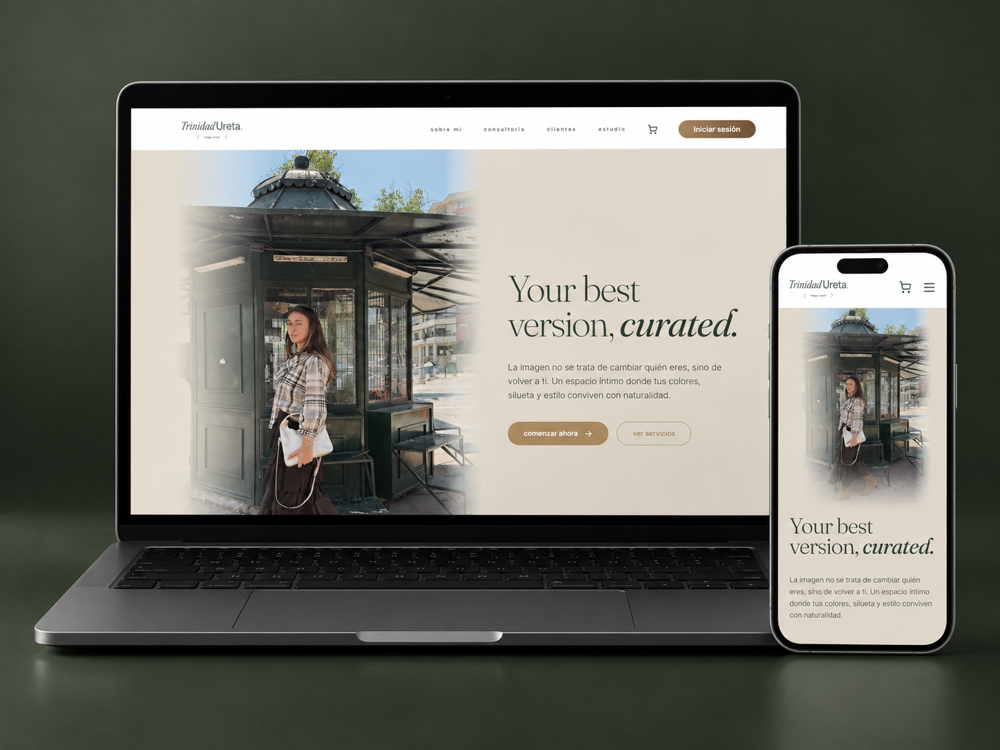
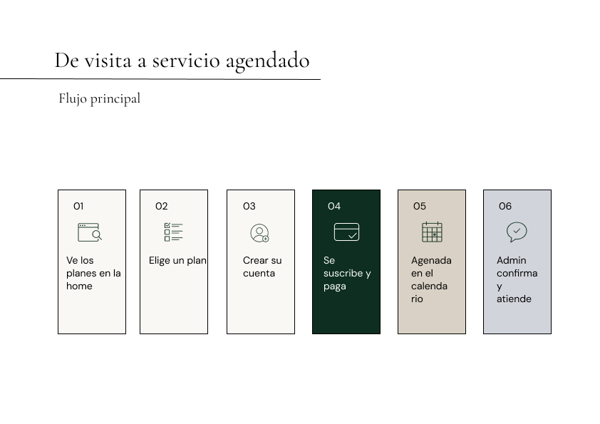
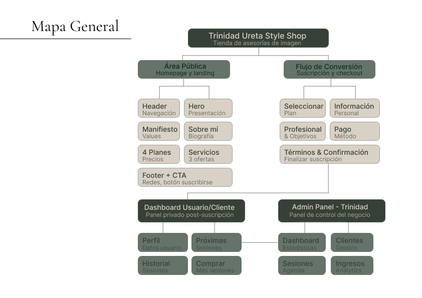
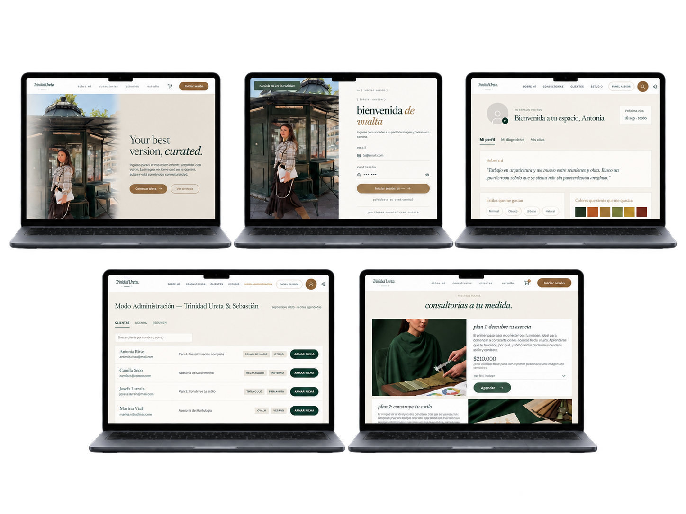
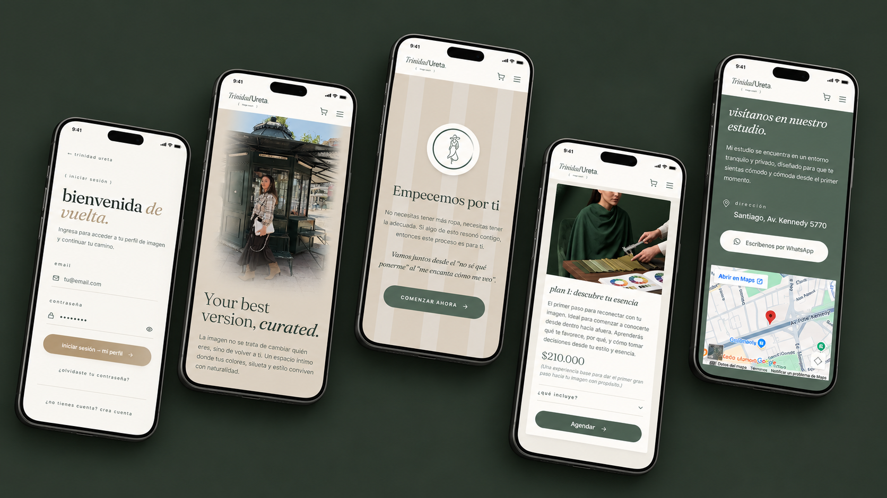

Your best version, curated
Plataforma editorial para una asesora de imagen: un frente de marca que convierte, un portal privado donde cada clienta consulta su diagnóstico de color y morfología, y un backoffice para operar agenda y fichas técnicas. Un solo producto para tres audiencias.

Una consultoría íntima que vivía en WhatsApp y planillas
La asesoría de imagen es un servicio de confianza: se vende por recomendación y se entrega en persona. Todo lo demás, cotizar, agendar, recordar qué colores le quedan a cada clienta, vivía disperso entre mensajes y documentos. La oportunidad no era «hacer una web», sino diseñar el producto que sostiene el servicio antes, durante y después de la sesión.
Marca sin territorio digital
Sin un espacio propio, el servicio competía en Instagram con contenido de moda genérico y no comunicaba su valor ni su precio.
El diagnóstico se perdía
Estación de color, morfología y notas de clóset se entregaban en la sesión y quedaban en una foto, imposibles de consultar al momento de comprar.
Agenda gestionada a mano
Cada cita implicaba una conversación de ida y vuelta: horarios disponibles, confirmación, pago y recordatorio.
Ritmo editorial, no ritmo de e-commerce
El manifiesto de marca «la imagen no se trata de cambiar quién eres, sino de volver a ti» define el tono de toda la interfaz: pausas largas, una sola idea por pantalla y fotografía curada en lugar de catálogos.
Las tipografías oficiales de la marca son Editor's Note en títulos, que aporta la voz editorial, y Area Normal, geométrica y funcional, para formularios, tablas y datos del panel. Al ser licenciadas, en el build se sustituyeron por equivalentes de código abierto: Cormorant Garamond reemplaza a Editor's Note y DM Sans a Area Normal, manteniendo el mismo contraste serif / palo seco. La misma jerarquía funciona para un manifiesto y para una ficha técnica.

Dos productos en un solo sistema
El flujo de la clienta busca conversión y retorno: descubre los planes en la home, elige, crea cuenta, paga y agenda. El flujo interno busca control: confirmar, bloquear horas y publicar la ficha de diagnóstico. Ambos comparten componentes, pero no compiten por atención.



Tres áreas, tres trabajos distintos
Narrativa que vende sin presionar
Manifiesto, presentación de Trinidad, metodología en tres pasos, colorimetría, morfología, estilo, y cuatro planes con precio visible en CLP y qué incluye desplegable.
Su diagnóstico, siempre a mano
Estación de color con swatches reales, morfología facial y corporal, notas de clóset personalizadas, próxima cita e historial de sesiones.
Operar el negocio en una pantalla
Listado de clientas con plan y etiquetas de diagnóstico, calendario maestro con bloqueo de agenda y un drawer para armar y publicar cada ficha técnica.


Lo que cambia cuando el servicio tiene producto
Reserva autónoma
La clienta pasa de descubrir a agendar sin escribir un mensaje: el precio, lo que incluye y la disponibilidad están en la misma pantalla.
El diagnóstico como activo
La ficha deja de ser un entregable de sesión y se vuelve la razón para volver: se consulta antes de comprar ropa, no después.
Operación en un lugar
Agenda, clientas y fichas en un backoffice propio: menos coordinación manual y una fuente única de verdad para el equipo.
«Diseñar para un servicio íntimo es decidir qué NO automatizar: la interfaz sostiene la relación, no la reemplaza.»